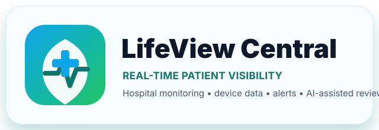

Mobile / PWA Viewer
Fast ward-round access for clinicians, nurses, and biomedical support teams.
Critical alerts
Review bed-level status from a phone or tablet.
Patient context
Open patient details, orders, labs, imaging, and notes.

Fast ward-round access for clinicians, nurses, and biomedical support teams.
Review bed-level status from a phone or tablet.
Open patient details, orders, labs, imaging, and notes.